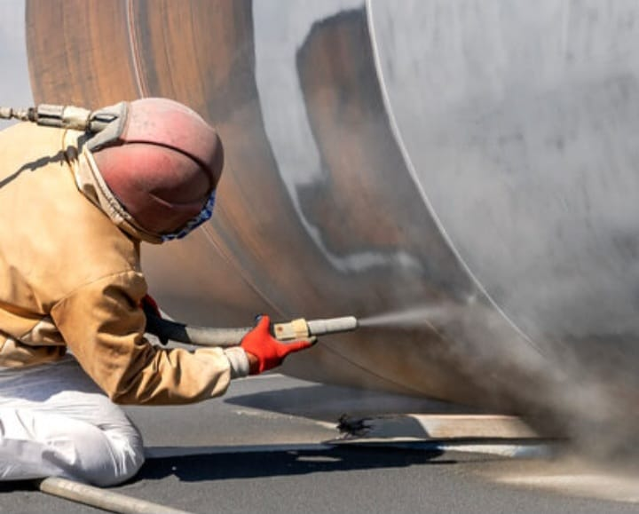
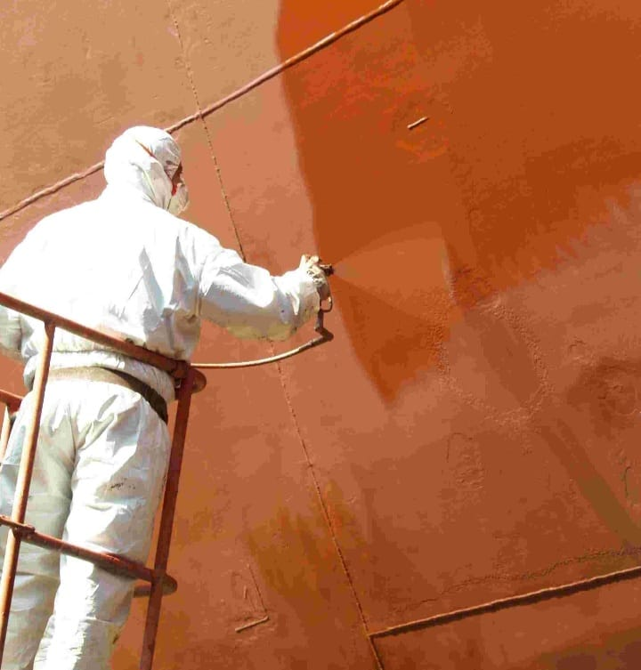
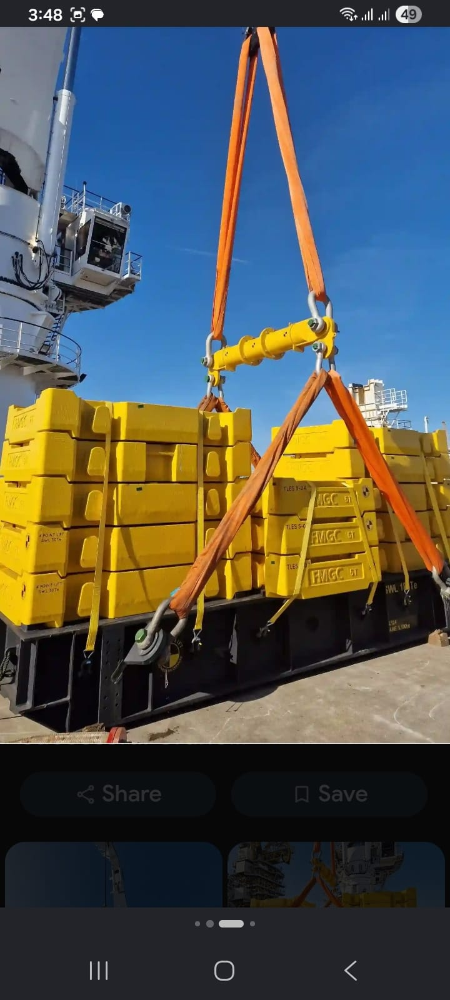
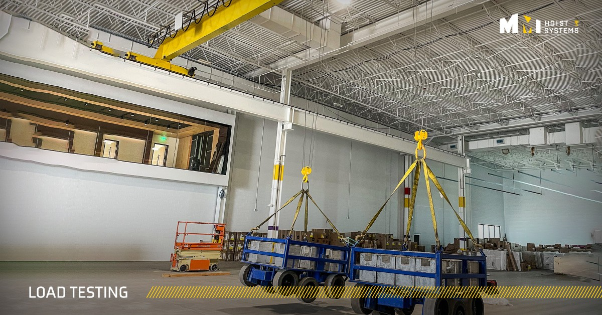
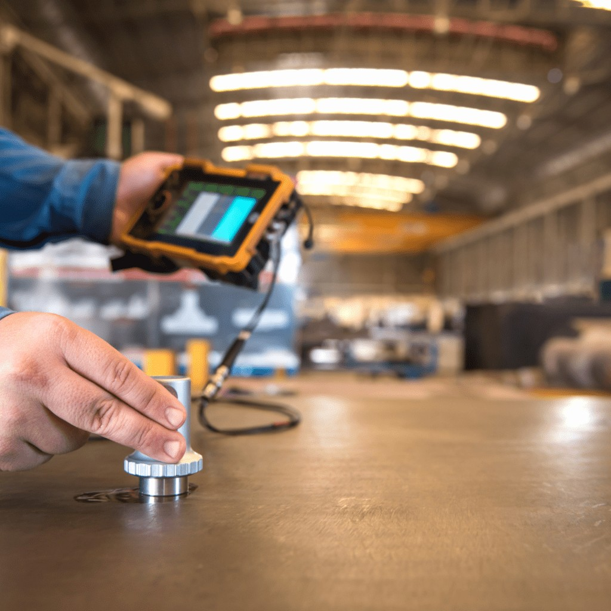
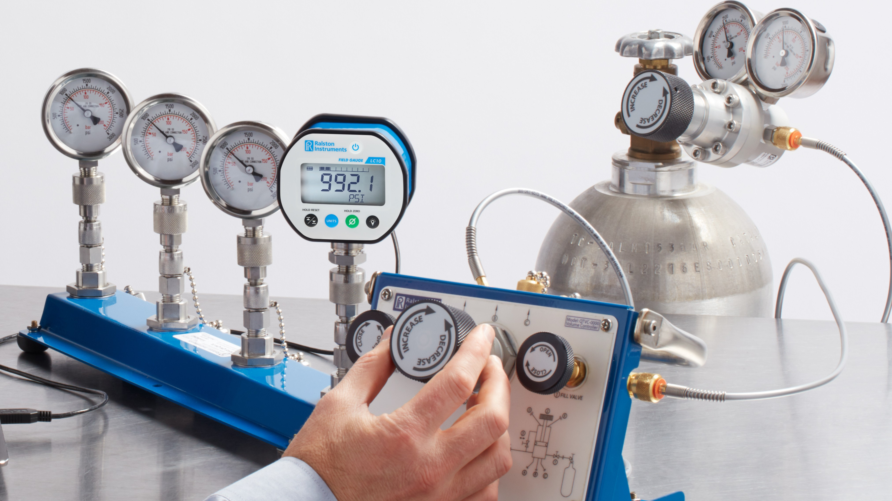
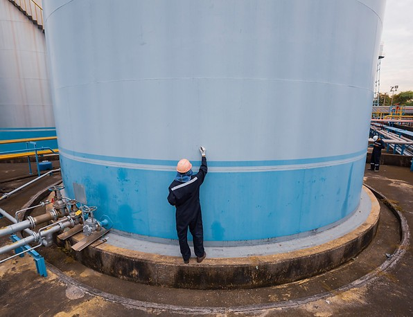

From ship cleaning to non-destructive testing, calibration, and pipeline integrity — every service is delivered with the same standard of safety and precision.
Complete cleaning services for both interior and exterior areas of a vessel, using safe and efficient marine cleaning methods to maintain ships to high operational and presentation standards — with a focus on safety, hygiene, and environmental compliance.




Specialized inspection services for drilling equipment using advanced inspection technologies, ensuring drilling components operate safely and efficiently in demanding environments.
Our inspection services detect potential defects, wear, and structural damage before they lead to equipment failure — reducing downtime risk and protecting crews and assets.
Seastride Engineering conducts load testing and safety inspections for cranes, forklifts, and lifting equipment to verify their structural integrity and operational reliability.
Our inspections help companies comply with workplace safety regulations and prevent equipment failure before it happens.


Calibration ensures that measurement instruments provide accurate readings. Seastride Engineering offers professional calibration services for a variety of industrial equipment and instruments.
Our calibration procedures follow international standards to maintain precision and reliability in industrial measurements.
NDT techniques allow engineers to inspect materials and structures without causing damage. We provide advanced NDT services for pipelines, tanks, and structural components.




Professional tank cleaning services and API inspections to ensure safe storage and compliance with industry standards.
Identifying corrosion, leaks, and structural weaknesses in pipelines before they become failures.
Protecting pipelines from corrosion and maintaining long-term infrastructure reliability.